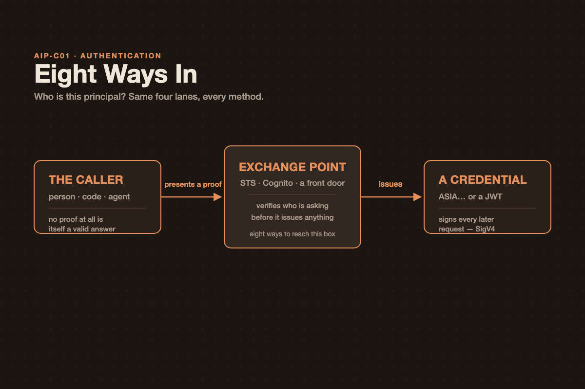

Eight Ways In: Notes for the Generative AI Developer Exam
Eight Ways In: Notes for the Generative AI Developer Exam

Every AWS authentication method answers one question — who is this principal? Exam stems dress that question up eight different ways, and it’s easy to end up pattern-matching on surface details (SAML vs. OIDC, a bearer token vs. a signature) instead of noticing that all eight methods share one shape. Once that shape is fixed, the only real work left is identifying who is calling.
They Are All the Same Shape
Something proves who you are, something exchanges that proof, and you end up holding a credential you can sign requests with. The methods differ only in what you present and who verifies it — not in the underlying mechanics.
The caller (person, code, or agent) presents a proof — a secret, a signature, an assertion, a token, a certificate, or nothing at all — to an exchange point (STS, Cognito, or some other front door), which verifies it and issues a credential (a temporary ASIA… key or a JWT). That credential is what signs every later request — with SigV4, for AWS calls. Authentication ends the moment a principal exists; everything after that is authorization.
The part people skip is the return path: the credential goes back to the caller, and it’s the caller’s own subsequent requests that get signed with it — not some intermediary acting on their behalf.
The Eight, Grouped by Who Is Calling
That’s the fork to settle first, before touching any service name. Below, each method is described in the same terms: what it presents, what it gets back, and the one thing worth watching for.
Group A — Your Workforce
IAM Identity Center (AssumeRole via a permission set) is how employees reach many AWS accounts from a corporate directory you already run.
- Presents: a SAML 2.0 assertion from your IdP (Okta, Entra ID) — or a password, if you use the built-in Identity Center directory.
- Gets back: a role session per account, plus short-term access keys from the access portal.
- Instead of: calling
AssumeRoleWithSAMLdirectly, which works but must be wired up in every account separately. Identity Center is one federation point for the whole organization. - Watch: one identity source per organization. The SCIM provisioning token expires after a year, and provisioning then stops silently.
Group B — Code Running on AWS
The role on the compute is the default for anything you run on AWS. If an answer stores a key here, it’s the wrong answer.
- Presents: nothing — position is the proof. The SDK’s default credential chain reads a local credential endpoint (IMDSv2 on EC2, the task metadata endpoint on ECS, the Pod Identity agent on EKS).
- Gets back: temporary credentials, rotated automatically. No configuration, no API call from your code.
- On EKS: Pod Identity is now AWS’s recommendation over IRSA — one static trust principal instead of an OIDC provider per cluster, plus cluster/namespace session tags for ABAC.
- Watch: IRSA is still required for EKS Anywhere, ROSA, and self-managed Kubernetes — Pod Identity doesn’t cover those.
AssumeRole (sts:AssumeRole) is for crossing an account boundary, or stepping down from broad credentials to narrow ones.
- Presents: credentials you already hold, plus the target role’s ARN.
- Gets back: a session on the target role, 15 minutes up to that role’s configured maximum.
- Third parties: add an
sts:ExternalIdcondition to the trust policy — the standard fix for the confused-deputy problem when a vendor is assuming your role. - Watch: the trust policy lives on the target role, in the target account — it’s a resource policy, and it’s what makes cross-account access possible at all. Role chaining (assuming a role using credentials that were themselves assumed) caps the session at one hour, no matter what the role’s own maximum says.
Group C — Code Running Outside AWS
OIDC federation (sts:AssumeRoleWithWebIdentity) is the modern default whenever a stem says “no stored credentials” — CI/CD pipelines, other clouds.
- Presents: a signed JWT from the platform’s own OIDC issuer (GitHub Actions, GitLab).
- Setup: an IAM OIDC identity provider, plus a role whose trust policy pins the
subclaim to a specific repository and branch. - Same call, underneath: this is the same mechanism Cognito identity pools use, and what IRSA runs on internally.
- Watch: Google, Facebook, and Cognito already have built-in OIDC providers — creating a new one for them in a scenario is a distractor.
IAM Roles Anywhere (rolesanywhere:CreateSession) is for on-premises servers — listen for “our own PKI” or “certificates” in the same sentence as “data centre”.
- Presents: a request signed with an X.509 private key, via the
aws_signing_helper. - Three objects, all Regional, all in one account: a trust anchor (your registered CA), a profile, and a role.
- Gets back: temporary credentials, 15 minutes to 12 hours, with the certificate’s subject and issuer fields attached as session tags — your PKI becomes an attribute source you can write IAM conditions against.
- Watch: any certificate from any trust anchor in the account can assume any role there, unless the trust policy narrows it. Revocation is by imported CRL only — there’s no OCSP.
Group D — Users of Your Application
Cognito user pool (returns JWTs — authentication only) is for consumer sign-up and sign-in, and very often is the whole answer, with no identity pool involved at all.
- Presents: whatever you enable — password, passkey, email/SMS one-time code, or a federated login.
- Gets back: ID and access tokens (5 minutes to 1 day) and a refresh token (30 days by default, up to 10 years).
- Tiers matter: passkeys and managed login require the Essentials tier; threat protection requires Plus. The Lite tier only gets the old hosted UI.
- Watch: MFA and custom auth flows are unavailable to federated users — a common gotcha when a scenario mixes social login with an MFA requirement.
Cognito identity pool (exchanges a token for AWS credentials) gets added only when the client itself must call an AWS API directly. The difference from the card above is exactly one lane in the flow.
- Presents: a user pool token, a third-party IdP token, a developer-authenticated identity — or nothing at all, for guest access.
- Gets back: temporary AWS credentials on a mapped IAM role.
- Role mapping: a default role, rules matching a token claim, or the
cognito:preferred_roleclaim from a group. - Watch: bolting one onto an architecture where your backend already calls AWS on the user’s behalf is pure cost and complexity for nothing.
Group E — Agents and Model Callers
Bearer tokens and agent identity (Bedrock API keys, AgentCore Identity) is where this exam actually tests authentication in an agentic context — and the key idea is that an agent has two identities: who called it, and who it calls out as.
- Inbound: one AgentCore Runtime version accepts SigV4 or a JWT authorizer — never both at once; configure separate versions if you need both paths. A JWT configuration needs a discovery URL plus at least one of: allowed audiences, clients, scopes, or custom claims. An AgentCore Gateway adds two more modes on top:
AUTHENTICATE_ONLYandNONE. - Outbound: three patterns for calling out on the user’s behalf — 2LO (client credentials, machine-to-machine), 3LO (authorization code with one-time user consent), and OBO (token exchange, swapping the inbound user token for a downstream one with no extra consent — the recommended production pattern).
- Bedrock API keys: a bearer token carried in
AWS_BEARER_TOKEN_BEDROCK, for frameworks that only understand “an API key”. Short-term keys inherit your session, last at most 12 hours, work only in the Region that generated them, and are the production form. Long-term keys create a dedicated IAM user and exist for exploration only. - Watch: blocking long-term keys requires denying both
bedrock:CallWithBearerTokenandbedrock-mantle:CallWithBearerToken— missing either one leaves a gap. Short-term key generation itself cannot be prevented at all.
And One More — the Method You Should Not Reach For
IAM user access keys (AKIA…, long-term) are worth knowing precisely because they’re the distractor in so many questions.
- Presents: a permanent access key and secret, signed with SigV4 directly.
- Still legitimately valid for: workloads that genuinely cannot use roles, and service-specific credentials (CodeCommit, Keyspaces).
- The tell:
ASIA…is temporary and came from STS.AKIA…is long-term and came from an IAM user — that four-letter prefix is worth memorizing on its own. - Watch: notice what’s missing from this flow compared to every other method — no exchange, no expiry, no third party attesting anything. The secret is the entire proof, and AWS’s own documentation now marks long-term keys “(Not recommended)” for programmatic access.
Compared
The last column is what to actually listen for. Exam stems rarely name the service outright — they name the constraint.
| Method | Who calls | Presents | Gets back | Lifetime | The tell in the stem |
|---|---|---|---|---|---|
| IAM Identity Center | Employees | SAML assertion | Role session per account | 1–12 h | “many accounts”, “existing corporate IdP” |
| Role on the compute | Your code on AWS | Nothing — position is the proof | Auto-rotated credentials | auto | anything running on EC2, Lambda, ECS, EKS |
AssumeRole |
An existing principal | Credentials + role ARN | Session on another role | 15 m–12 h (1 h if chained) | “cross-account”, “a third-party vendor” |
| OIDC federation | Code outside AWS | A signed JWT | Temporary credentials | 1 h default | “CI/CD”, “no stored credentials” |
| Roles Anywhere | Servers outside AWS | X.509 signature | Temporary credentials + cert tags | 15 m–12 h | “on-premises”, “our own PKI” |
| Cognito user pool | Your app’s users | Password, passkey, OTP, federation | ID, access, refresh JWTs | 5 m–1 day, refresh ≤10 y | “sign-up and sign-in”, “mobile users” |
| Cognito identity pool | Your app’s users | A token, or nothing | AWS credentials on a role | ≤1 h | “upload directly to S3”, “from the browser” |
| Bearer token / agent | An agent or framework | Bedrock API key, or a JWT | A validated caller | ≤12 h, or the token’s exp |
“only accepts an API key”, “on the user’s behalf” |
| IAM user access key | Anything | A permanent secret | Full user permissions | until rotated | almost always the distractor |
The one line to remember: seven of the nine end in temporary credentials from STS. Cognito user pools end in a JWT your own code verifies, and access keys end in nothing new at all — no exchange happened. If you can say which of those three endings a scenario needs, you’ve already picked the method.
How to Choose, in One Question
Settle who is calling first — nothing downstream can be reached without answering that. Then one follow-up question settles it:
| Who is calling | Follow-up question | Answer |
|---|---|---|
| An employee | Many accounts, or one? | IAM Identity Center for many · AssumeRoleWithSAML for one |
| Code on AWS | Same account, or another? | The role on the compute for same · AssumeRole (+ ExternalId for vendors) for another |
| Code outside AWS | Does it hold an OIDC token, or a certificate? | OIDC federation for a token · IAM Roles Anywhere for a certificate |
| A user of your app | Does your backend call AWS, or does the client? | User pool alone if your backend does · add an identity pool if the client does |
| An agent | Inbound, or outbound? | Inbound is SigV4 or JWT, never both · outbound is the execution role inside AWS, the token vault outside |
Picking the method before identifying the caller is how these questions get missed — every branch above takes exactly two questions, in that order.
Sources
Every figure, limit, and behaviour above was read from AWS’s own documentation.
- What is IAM Identity Center · Identity sources · SCIM provisioning
- Pod Identity vs. IRSA · EKS Pod Identity · IRSA
- STS API operations · Credential comparison · Methods to assume a role
- OIDC federation · Creating an OIDC provider · SAML 2.0 federation
- IAM Roles Anywhere — introduction · Trust model · Credential helper
- What is Amazon Cognito · Identity pools · Feature plans · Token lifetimes
- Bedrock API keys · Governing API keys · AgentCore Runtime inbound auth · AgentCore outbound credential providers
- Comparing IAM identities and credentials · Multi-factor authentication